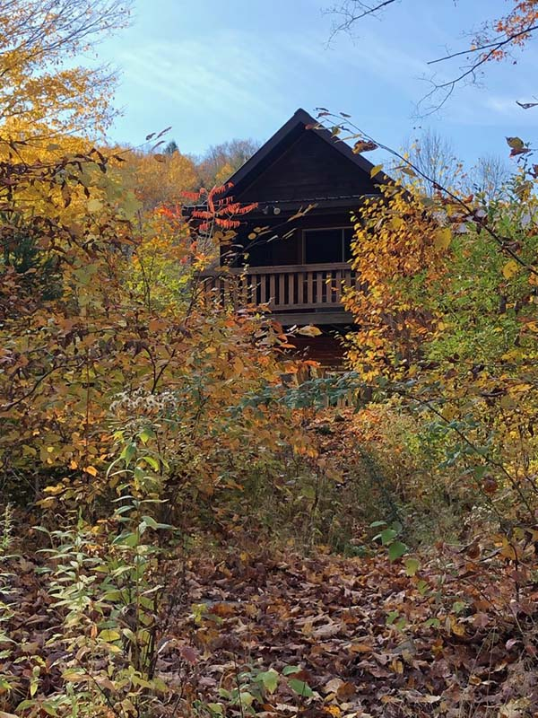

What Are the Best Spring Activities Near Cabin Rentals Catskills in Livingston Manor?
J&S Creekside Cabins in Livingston Manor provides the kind of cabin rentals Catskills visitors need to enjoy every season comfortably. This family-owned property along the Willowemoc Creek offers well-maintained cabins with full kitchens, private outdoor areas, and direct creek access that makes each visit feel like coming home. Whether guests arrive for spring trout fishing or autumn foliage, the team at J&S Creekside Cabins ensures a consistently warm welcome and a property that adapts to the needs of every season. J&S Creekside Cabins
Spring in Livingston Manor begins with the opening of trout season on April 1st, a date that fly fishing enthusiasts circle months in advance. The Willowemoc Creek and its tributaries come alive with hatches that draw anglers from across the northeast to Sullivan County. Beyond the water, spring hiking along the Long Path and the DeBruce Trail reveals wildflowers, migrating birds, and waterfalls running at full volume after snowmelt. J&S Creekside Cabins sits close to all of these opportunities, making the transition from creek to trail effortless for guests who want to experience the Catskills as the landscape reawakens. explore cabin stays in the Lew Beach area

How Can Summer Visitors Make the Most of Cabin Rentals Catskills?
Summer brings the longest days and the widest range of activities to the Livingston Manor area. Swimming holes along the Willowemoc and Beaverkill offer natural relief from the heat, while mountain biking trails on nearby state land provide exercise with panoramic views. Evenings are best spent around a fire pit or on a cabin porch listening to the creek below. The town's Main Street comes alive during summer weekends with pop-up events, gallery openings, and outdoor dining that reflect the creative spirit the community has cultivated over the past decade. cabin rentals near Roscoe NY
What Fall Activities Draw Visitors to Cabin Rentals in the Catskills?
Autumn in the Catskill Mountains is the visual peak of the year. Hardwood forests across Sullivan County erupt in reds, oranges, and golds from late September through mid-October, and cabin guests at properties along the Willowemoc enjoy front-row seats to the show. Hiking trails like the Willowemoc Wild Forest loop offer elevated views of the color, while scenic drives along Route 206 and through the Beaverkill Valley provide a more relaxed way to take it all in. Apple picking at nearby farms and harvest festivals in towns like Callicoon and Jeffersonville round out the fall cabin experience.
What Winter Activities Are Available for Catskills Cabin Guests Near Roscoe?
Winter transforms the cabin rentals Catskills experience into something quieter and more reflective. Cross-country skiing and snowshoeing on state trails offer exercise in a landscape stripped to its essential beauty. The creeks still flow, though ice formations along the banks create striking visual contrasts that photographers travel specifically to capture. J&S Creekside Cabins keeps guests warm with well-insulated structures and the kind of cozy interiors that make a January weekend feel like a genuine retreat from the pace of daily life in the city. weekend cabin getaway Catskills

What Makes the Parksville and Liberty Areas Worth Exploring from Your Cabin?
Guests staying in Livingston Manor often venture south to Parksville and Liberty for additional dining, shopping, and entertainment options. Liberty's Main Street features independent shops and restaurants with a mountain-town character, while Parksville offers a quieter stop along the Route 17 corridor with access to parks and local history. Both communities are within a twenty-minute drive of J&S Creekside Cabins, making them easy side trips during any season. This proximity expands the range of a cabin stay without requiring guests to relocate or spend excessive time on the road.
How Do Year-Round Visitors Plan Multi-Season Cabin Stays in Livingston Manor?
Repeat visitors to J&S Creekside Cabins often book their next trip before the current one ends, recognizing that each season in the Catskills offers something the others do not. A spring fishing trip becomes a summer family vacation, which leads to a fall foliage weekend, which inspires a winter solitude retreat. The consistency of the property and the deepening familiarity with the area create a cycle of return that transforms a cabin rental from a single trip into an ongoing relationship with Livingston Manor and the Willowemoc Valley. Cabin rentals Catskills guests value most are the ones that welcome them back without hesitation. trout fishing cabins NY
Why Do Families Return to Cabin Rentals Catskills Year After Year?
Families choose cabin rentals Catskills because the experience offers freedom that structured accommodations cannot match. Children explore creek banks, catch fireflies at dusk, and develop an appreciation for natural spaces that screens cannot replicate. Parents enjoy the convenience of cooking meals on their own schedule and relaxing in a private setting while still being close to town amenities in Livingston Manor. J&S Creekside Cabins understands family dynamics and provides layouts that give everyone space without losing the togetherness that makes a cabin trip memorable. J&S Creekside Cabins